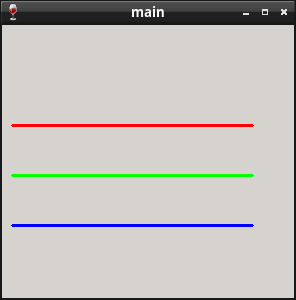

Steward
分享是一種喜悅、更是一種幸福
程式語言 - ObjAsm - Painting - Draw Line
參考資訊：
https://github.com/ObjAsm
https://objasm.x10host.com/index.htm
main.asm
%include @Environ(OBJASM_PATH)/Code/Macros/Model.inc
SysSetup OOP, WIN32, ANSI_STRING
MakeObjects Primer, Stream, WinPrimer, Window, WinApp, SdiApp
.const
CStr szName, "main"
Object MyApp, , SdiApp
RedefineMethod Init
VirtualEvent OnPaint, WM_PAINT
DefineVariable wndClass, WNDCLASS, {0}
ObjectEnd
.code
Method MyApp.Init, uses esi
SetObject esi
ACall esi.Init
m2m [esi].wndClass.hbrBackground, COLOR_WINDOW
m2m [esi].wndClass.lpfnWndProc, $MethodAddr(MyApp.WndProc)
m2m [esi].wndClass.lpszClassName, offset szName
invoke RegisterClass, addr [esi].wndClass
invoke CreateWindowEx, WS_EX_LEFT, offset szName, offset szName,
WS_OVERLAPPEDWINDOW or WS_VISIBLE, 0, 0, 300, 300, NULL, NULL, NULL, pSelf
m2m [esi].hWnd, eax
MethodEnd
Method MyApp.OnPaint, uses esi, wParam:WPARAM, lParam:LPARAM
local hDC:HDC
local hPen[3]:DWORD
local PS:PAINTSTRUCT
SetObject esi
mov hDC, $invoke(BeginPaint, [esi].hWnd, addr PS)
mov hPen[0], $invoke(CreatePen, PS_SOLID, 3, 0ffh)
mov hPen[4], $invoke(CreatePen, PS_SOLID, 3, 0ff00h)
mov hPen[8], $invoke(CreatePen, PS_SOLID, 3, 0ff0000h)
invoke SelectObject, hDC, hPen[0]
invoke MoveToEx, hDC, 10, 100, NULL
invoke LineTo, hDC, 250, 100
invoke SelectObject, hDC, hPen[4]
invoke MoveToEx, hDC, 10, 150, NULL
invoke LineTo, hDC, 250, 150
invoke SelectObject, hDC, hPen[8]
invoke MoveToEx, hDC, 10, 200, NULL
invoke LineTo, hDC, 250, 200
invoke EndPaint, [esi].hWnd, addr PS
invoke DeleteObject, hPen[0]
invoke DeleteObject, hPen[4]
invoke DeleteObject, hPen[8]
MethodEnd
start proc
SysInit
OCall $ObjTmpl(MyApp)::MyApp.Init
OCall $ObjTmpl(MyApp)::MyApp.Run
OCall $ObjTmpl(MyApp)::MyApp.Done
SysDone
invoke ExitProcess, 0
start endp
end
完成
